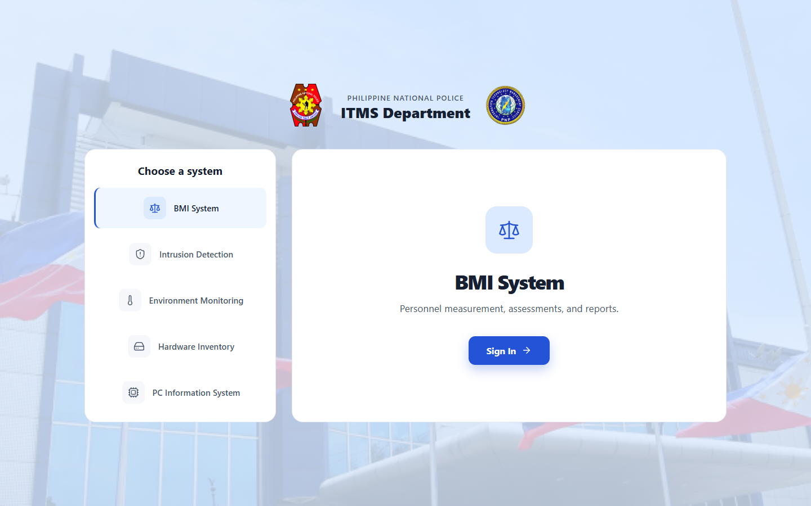

BMI System
Measures height and weight at a kiosk and classifies the result, with dashboards, trends and PDF reports.
ESP32 · RFID · ultrasonic · load cell
Case study · IoT & full-stack platform
One platform that lets a police IT department track fitness, security, environment and equipment in one place.
Status: working software with five systems, built for the Philippine National Police ITMS Department. [Confirm which sensor boards are installed on site and which are still bench prototypes.]

Screenshot · landing pageThe problem
A police IT department has several jobs that usually live in separate places: checking that personnel meet fitness standards, knowing whether a server room is being broken into or overheating, and keeping track of every computer, printer and router. PNP ITMS brings them into one login-protected platform.
[Add the real situation in two or three sentences: who asked for it, what they did before, and what was slow or error-prone.]
How it works
The fitness kiosk is the most hands-on of the five systems. Here is what happens when an officer is measured.
The RFID reader identifies the officer.
RC522 · height boardAn admin starts a measurement session on the website. The kiosk is waiting for that signal.
Web app · REST APIStand under the sensor. A small screen says what to do.
HC-SR04 + 16x2 LCD · height boardStep on the scale. The reading is sent once it settles.
HX711 load cell · scale boardThe backend works out BMI and ideal body weight and classifies it, then it appears on the dashboard.
NestJS · MySQL · ReactBMI is classified against both the WHO bands and an age-adjusted PNP “Acceptable BMI” table. [Confirm the order of the steps.]
What’s inside
Each system has its own page, its own data, and its own role-scoped access.
Measures height and weight at a kiosk and classifies the result, with dashboards, trends and PDF reports.
ESP32 · RFID · ultrasonic · load cell
Shows live status of a beam-break sensor and keeps a log of genuine triggered and clear events.
ESP32 · laser/LDR beam · buzzer · SMS
Tracks temperature and smoke, and classifies each reading as normal, smoke detected, or high temperature.
ESP32 · SHT31 · MQ-2
Tracks IT assets by division and person, either entered by admins or reported automatically by a collector agent.
REST API · shared-secret agent
Imports a forensics-tool export and shows security findings, connections and component health for each machine.
CSV import · security assessment
Under the hood
Sensor boards and a collector agent send readings over the network to one backend, which stores them and drives the dashboard and the alerts. Select a node to see what it does.
Arrows show the direction of the data. Packets are illustrative.
My role
I led a team of 3. My teammates mostly wrote the papers and documentation, and I handled the whole technical side, from the sensor boards to the dashboard.
Challenges & solutions
Results
The first two are facts about what was built. The rest are waiting for real numbers.
Gallery
Tap any picture to enlarge it. These are screenshots of the working web app.
preload="none" so it does not slow the page.What’s next